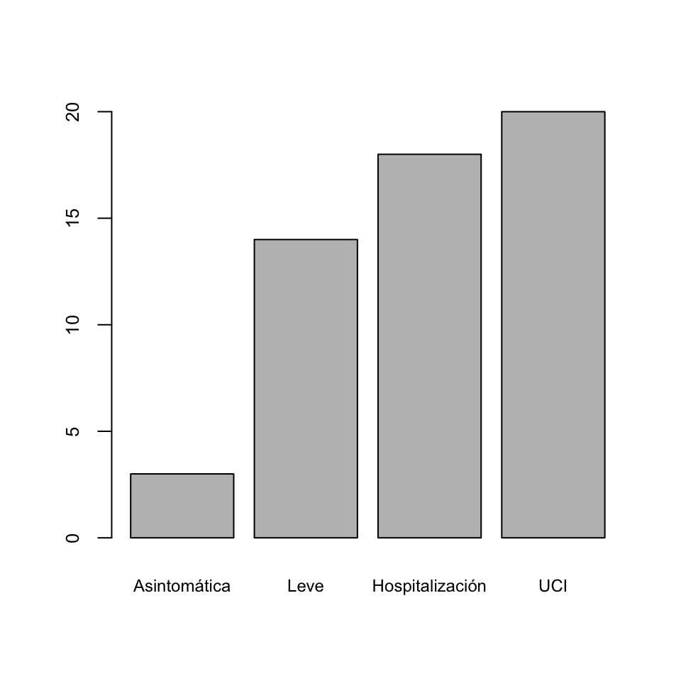

Lección 8 Descripción de datos ordinales
Los datos ordinales son parecidos a los cualitativos, en el sentido de que son cualidades de objetos o individuos. Su diferencia con los datos cualitativos está en que las características que expresan los datos ordinales tienen un orden natural que permite acumular observaciones, es decir, contar cuántas hay por debajo de cada nivel. Un caso frecuente son las escalas tipo Likert, que se usan para expresar el nivel de acuerdo o desacuerdo con una afirmación mediante respuestas cerradas.
Ejemplo 8.1 En una encuesta sobre la actitud de personal sanitario frente al dolor (M. E. Zanolin et al, “A questionnaire to evaluate the knowledge and attitudes of health care providers on pain”, Journal of pain and symptom management 33 (2007), pp. 727-736), se pidió el grado de conformidad con afirmaciones como:
Como los narcóticos pueden causar depresión respiratoria, no se han de usar en pacientes pediátricos.
Es útil dar de entrada un placebo al paciente que se queja de dolor para saber si realmente siente dolor.
según la escala Likert siguiente:
| Nivel | Significado |
|---|---|
| 1 | Muy en desacuerdo |
| 2 | En desacuerdo |
| 3 | Neutral |
| 4 | De acuerdo |
| 5 | Muy de acuerdo |
Las respuestas a este tipo de cuestionarios son números, pero no son datos cuantitativos, sino ordinales: meras abreviaturas de los diferentes grados de conformidad.
Para más información sobre escalas Likert, podéis consultar la correspondiente entrada de la Wikipedia.
8.1 Frecuencias y diagramas de barras
Cuando trabajamos con datos ordinales, el orden de los niveles de los datos permite calcular no sólo las frecuencias absolutas y relativas que veíamos en la lección anterior, y que para variables ordinales se definen del mismo modo, sino también frecuencias acumuladas. Es decir, no sólo podemos contar cuántas veces hemos observado un cierto nivel, sino también cuántas veces hemos observado un nivel menor o igual que él. Por lo tanto, su descripción estadística es la misma que para datos cualitativos, más:
Frecuencias absolutas acumuladas: El número de veces que aparece en la muestra un nivel menor o igual que el considerado.
Frecuencias relativas acumuladas: La fracción del total de la muestra que representan los niveles menores o iguales que el considerado.
De nuevo, estas frecuencias acumuladas se pueden recoger en una tabla y representar en forma de diagrama de barras (con los niveles ordenados en orden creciente).
Ejemplo 8.2 Tenemos una muestra de 20 estudiantes de quienes sabemos la calificación que han sacado en un examen. Clasificamos estas calificaciones en Suspenso (S), Aprobado (A), Notable (N) y Sobresaliente (E) y consideramos su orden natural S < A < N < E. Las calificaciones que han obtenido son las siguientes:
En esta lista hay 6 S, 7 A, 4 N y 3 E: éstas serían las frecuencias absolutas de las calificaciones en esta muestra de estudiantes. Por lo que se refiere a sus frecuencias absolutas acumuladas:
- Hay 6 estudiantes que han obtenido S o menos: la frecuencia acumulada de S es 6.
- Hay 13 estudiantes que han obtenido A o menos (6 S y 7 A): la frecuencia acumulada de A es 13.
- Hay 17 estudiantes que han obtenido N o menos (6 S, 7 A y 4 N): la frecuencia acumulada de N es 17.
- Hay 20 estudiantes que han obtenido E o menos (todos): la frecuencia acumulada de E es 20.
La frecuencia relativa acumulada de cada calificación es la fracción del total de estudiantes que representa su frecuencia absoluta acumulada. Por ejemplo, la frecuencia relativa acumulada de notables es la proporción de estudiantes que han sacado un notable o menos, y, por lo tanto, es igual a la frecuencia absoluta acumulada de N dividida por el número total de estudiantes: 17/20=0.85. También se puede obtener “acumulando” las frecuencias relativas de las calificaciones menores o iguales que N: como hay un 30% de S (6 de 20), un 35% de A (7 de 20) y un 20% de N (4 de 20), la frecuencia relativa acumulada de N es 0.3+0.35+0.2=0.85, es decir, un 85%.
Así pues, las frecuencias relativas acumuladas de las calificaciones en esta muestra son:
- Frecuencia relativa acumulada de S: 6/20=0.3.
- Frecuencia relativa acumulada de A: 13/20=0.65.
- Frecuencia relativa acumulada de N: 17/20=0.85.
- Frecuencia relativa acumulada de E: 20/20=1.
Resumimos todos estos valores en la tabla siguiente:
| Frecuencia absoluta | Frecuencia relativa | Porcentaje | Frecuencia absoluta acumulada | Frecuencia relativa acumulada | Porcentaje acumulado | |
|---|---|---|---|---|---|---|
| Suspenso | 6 | 0.30 | 30% | 6 | 0.30 | 30% |
| Aprobado | 7 | 0.35 | 35% | 13 | 0.65 | 65% |
| Notable | 4 | 0.20 | 20% | 17 | 0.85 | 85% |
| Sobresaliente | 3 | 0.15 | 15% | 20 | 1.00 | 100% |
Ejemplo 8.3 Todos los ancianos recogidos en la tabla de datos del Ejemplo 7.2 fueron diagnosticados con COVID-19 entre marzo y mayo de 2020. Vamos a ampliar dicha tabla de datos con información sobre la gravedad de su enfermedad, clasificada en cuatro niveles: Asintomática, Leve, Hospitalización (si requirió hospitalización pero no en UCI) y UCI. Consideraremos esta variable como ordinal, con sus niveles ordenados de esta manera.
La tabla de datos ampliada es la siguiente:
| Sexo | Demencia Senil | Cáncer de mama | COVID-19 | |
|---|---|---|---|---|
| 1 | Mujer | No | No | Leve |
| 2 | Mujer | Alzheimer | Sí | UCI |
| 3 | Hombre | Alzheimer | No | Leve |
| 4 | Mujer | Otros | No | Asintomática |
| 5 | Mujer | Alzheimer | No | Leve |
| 6 | Mujer | Otros | Sí | Hospitalización |
| 7 | Mujer | No | No | UCI |
| 8 | Mujer | Alzheimer | No | Leve |
| 9 | Hombre | Otros | No | Leve |
| 10 | Mujer | Otros | Sí | Leve |
| 11 | Hombre | Alzheimer | No | Leve |
| 12 | Hombre | Alzheimer | No | Hospitalización |
| 13 | Mujer | No | No | Leve |
| 14 | Mujer | No | No | Asintomática |
| 15 | Hombre | Alzheimer | No | Leve |
| 16 | Mujer | No | Sí | Asintomática |
| 17 | Mujer | No | No | Leve |
| 18 | Mujer | No | No | Hospitalización |
| 19 | Mujer | Alzheimer | No | Hospitalización |
| 20 | Hombre | No | No | Leve |
Entonces:
- La tabla de frecuencias absolutas de la variable COVID-19 es:
COVID-19 Frecs. Asintomática 3 Leve 11 Hospitalización 4 UCI 2 - Su tabla de frecuencias relativas:
COVID-19 Frecs. Asintomática 0.15 Leve 0.55 Hospitalización 0.20 UCI 0.10 - Su tabla de frecuencias absolutas acumuladas:
COVID-19 Frecs. Acum Asintomática 3 Leve 14 Hospitalización 18 UCI 20 - Su tabla de frecuencias relativas acumuladas:
COVID-19 Frecs. Acum Asintomática 0.15 Leve 0.70 Hospitalización 0.90 UCI 1.00 - Su diagrama de barras de frecuencias absolutas acumuladas:

- Su diagrama de barras de frecuencias relativas acumuladas:
- La tabla bidimensional de frecuencias absolutas de las variables Demencia Senil y COVID-19:
| Asintomática | Leve | Hospitalización | UCI | |
|---|---|---|---|---|
| Alzheimer | 0 | 5 | 2 | 1 |
| Otros | 1 | 2 | 1 | 0 |
| No | 2 | 4 | 1 | 1 |
- Su tabla de frecuencias relativas acumuladas dentro de cada nivel de demencia senil:
| Asintomática | Leve | Hospitalización | UCI | |
|---|---|---|---|---|
| Alzheimer | 0.00 | 0.625 | 0.875 | 1 |
| Otros | 0.25 | 0.750 | 1.000 | 1 |
| No | 0.25 | 0.750 | 0.875 | 1 |
- El diagrama de barras yuxtapuestas de esta última tabla:

Como vimos en el tema anterior, JAMOVI da las frecuencias acumuladas (si hemos especificado correctamente el orden de los niveles) al calcular tablas de contigencia en Exploración/Descriptivas. En las tablas multidimensionales la acumulación se lleva a cabo en el total, lo que no siempre es conveniente. Para calcular bien tablas bidimensionales acumulando frecuencias por filas o columnas hay que usar R en la ventana de edición. Por ejemplo, para obtener la tabla de frecuencias relativas acumuladas que hemos dado hace un momento de niveles de gravedad de la COVID dentro de cada nivel de demencia senil podemos usar:
Fijaos en la lógica de la sintaxis de esta instrucción. De dentro a fuera:
table(data$Demencia, data$COVID)calcula la tabla de frecuencias absolutas de las variables Demencia y COVID, con filas la Demencia.prop.table(..., margin=1)calcula la tabla de frecuencias relativas (de proporciones) por filas (margin=1) de la tabla de frecuencias absolutas a la que se aplica en los puntos suspensivos.apply(..., MARGIN=1, FUN=cumsum)aplica la funcióncumsum, que calcula sumas acumuladas, por filas a la tabla entrada en los puntos suspensivos.
Esta última función transpone nuestra tabla (siempre da el resultado de manera que la dimensión en la que se acumulan las frecuencias sea la de las columnas); si quisiérais mantener los tipos de demencia en la filas, se aplicaría t(...) al resultado del apply.
En el estudio del ejercicio al final de la Sección 7.4, entre los 60 enfermos hubo 12 de 40 años o menos, 3 entre 41 y 50 años, 15 entre 51 y 60 años y 30 de más de 60 años, mientras que los que no presentaron la enfermedad fueron, en estas franjas de edad, 29, 21, 17 y 18, respectivamente. Dad:
Un diagrama de barras bidimensional que muestre las frecuencias relativas de las diferentes franjas de edad en enfermos y en sanos.
Un diagrama de barras bidimensional que muestre las frecuencias relativas acumuladas de las diferentes franjas de edad en enfermos y en sanos.
8.2 Test
(1) ¿Cuál es el valor con mayor frecuencia relativa acumulada en un conjunto de datos ordinales?
- La moda del conjunto de datos.
- El relativamente más frecuente.
- El primer dato obtenido.
- El último dato obtenido.
- El mayor dato obtenido.
- Ninguna de las respuestas anteriores es correcta.
(2) A lo largo de un año se atendieron lesiones en la enfermería de un centro de secundaria con la siguiente distribución de gravedad: 26 muy leves, 28 leves, 15 moderadas, 8 graves y 3 muy graves. ¿Cuál es la frecuencia relativa acumulada del nivel de gravedad “Moderada”?
- 0.1875
- 0.8625
- 0.325
- 0.2174
- 0.69
- Ninguna de las anteriores.